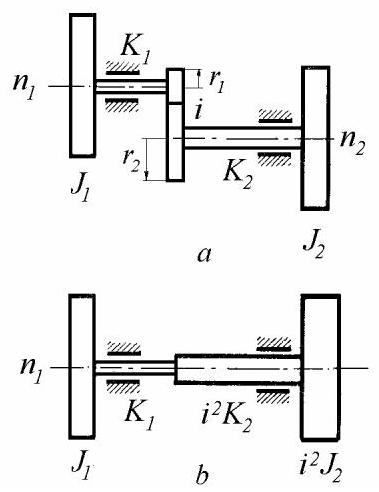
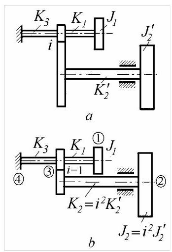
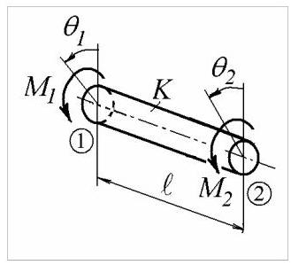
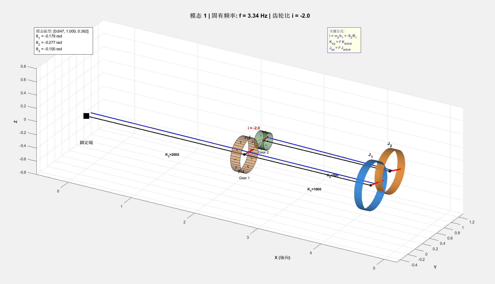

第18篇
4.2.3 齿轮系统
考虑图4.11所示的齿轮扭转系统，\(a\)在轴1上装有节圆半径(pitch radius)为\({r}_{1}\)的齿轮，在轴2上装有节圆半径为\({r}_{2}\)的齿轮。假设齿轮为刚性，惯量可忽略且齿面保持接触。齿轮比为
其中\({n}_{1}\)和\({n}_{2}\)为两轴的转速，\({\theta }_{1}\)和\({\theta }_{2}\)为对应的角位移。
该齿轮系统可方便地简化为等效的无齿轮系统(图4.11, b)，其中省略了齿轮。在简化过程中，等效轴的刚度由势能相等条件确定
由此得

图4.11
等效圆盘的极质量惯性矩由动能相等条件确定
来源
以轴1为参考，轴2的等效参数为(图4.11，\(b\))
当齿轮惯量可忽略时，等效系统适用以下规则:移除所有齿轮，并将所有刚度及惯量乘以\({i}^{2}\)，其中\(- i\)为齿轮轴相对于参考轴的转速比。
在确定等效系统的模态振型后，通过相容方程恢复实际系统的模态振型与扭矩
4.2.4 齿轮分支系统
考虑图4.12\(a\)所示的具有可忽略惯量齿轮及无质量轴的分支系统。可通过将分支2-3的所有刚度与惯量乘以转速比\(i\)的平方，将其转换为图4.12\(b\)所示的1:1齿轮模型。注意，根据方程(4.71)，简化分支中的扭矩与角位移与实际值不同。

图4.12
可采用有限元方法列写运动方程。均匀轴被视为具有扭转刚度\(K\)的两节点有限元。轴与振动系统其他部分的连接点称为节点(勿与模态振型的驻点混淆)，在图4.13中标记为1和2。
扭矩\({M}_{1}\)和\({M}_{2}\)可通过平衡及扭矩/转角方程与转角\({\theta }_{1}\)和\({\theta }_{2}\)关联
方程(4.72)可写成矩阵形式
或简写为\(\{ M\} = \left\lbrack {k}^{e}\right\rbrack \{ \theta \}\)，其中\(\left\lbrack {k}^{e}\right\rbrack\)称为单元刚度矩阵。

图4.13
利用方程(4.73)，可写出图\({4.12}, b\)中每根轴的扭矩-转角方程
每个方程可展开如下
整体系统的扭矩通过在每个节点累加所有扭矩获得，这可通过将展开的刚度矩阵相加得到
利用边界条件\({\theta }_{4} = 0\)，得到缩减的系统刚度矩阵，从而可写出运动方程
利用第三个方程消去坐标\({\theta }_{3}\)
我们得到两个运动方程
求解特征值问题后，为了绘制实际模态振型，必须利用方程(4.71)将等效系统确定的角振幅\({\Theta }_{2}\)转换回实际值。第5.1.3节给出了一种更直接的方法。
Matlab Demo
搓一个演示的代码，显示效果有点呆(´･_･`)，有bug，但是懒得调了

clc;
clear;
close all;
%% ========== 第一部分：系统参数定义 ==========
fprintf('======== 齿轮分支系统扭转振动分析 ========\n\n');
% 实际系统物理参数 (对应图4.12a)
J1 = 1.0; % [kg·m²] 惯量 J1
J2_actual = 0.5; % [kg·m²] 惯量 J2 (实际值)
K1 = 1000; % [N·m/rad] 轴1刚度 (J1 到节点3)
K2_actual = 800; % [N·m/rad] 轴2刚度 (J2 到节点3)
K3 = 2000; % [N·m/rad] 轴3刚度 (节点3到固定端)
i = -2.0; % 齿轮比 i = -n2/n1 (方程4.67)
%% ========== 第二部分：等效系统计算 (方程4.70) ==========
fprintf('--- 步骤1: 计算等效系统参数 ---\n');
fprintf('齿轮比 i = %.2f\n', i);
% 将轴2参数转换为等效值 (以轴1为参考)
J2_eq = i^2 * J2_actual; % 方程(4.70): J2_eq = i² * J2
K2_eq = i^2 * K2_actual; % 方程(4.70): K2_eq = i² * K2
fprintf('等效惯量 J2_eq = i² × J2 = %.2f kg·m²\n', J2_eq);
fprintf('等效刚度 K2_eq = i² × K2 = %.0f N·m/rad\n\n', K2_eq);
%% ========== 第三部分：建立并求解运动方程 (方程4.76) ==========
fprintf('--- 步骤2: 建立等效系统运动方程 ---\n');
% 等效质量矩阵
M_eq = diag([J1, J2_eq]);
% 等效刚度矩阵 (方程4.76)
K_sum = K1 + K2_eq + K3;
k11 = K1 * (K2_eq + K3) / K_sum;
k12 = -K1 * K2_eq / K_sum;
k21 = k12;
k22 = K2_eq * (K1 + K3) / K_sum;
K_eq = [k11, k12; k21, k22];
fprintf('等效刚度矩阵 K_eq:\n');
disp(K_eq);
% 求解特征值问题
[V_eq, D] = eig(K_eq, M_eq);
omega = sqrt(diag(D));
freq_hz = omega / (2*pi);
fprintf('--- 步骤3: 计算固有频率和振型 ---\n');
for mode_idx = 1:length(freq_hz)
fprintf('模态 %d: f = %.2f Hz, ω = %.2f rad/s\n', mode_idx, freq_hz(mode_idx), omega(mode_idx));
end
%% ========== 第四部分：恢复实际系统振型 (方程4.71) ==========
fprintf('\n--- 步骤4: 将等效振型转换为实际振型 ---\n');
% 计算节点3的角位移
Theta1_eq = V_eq(1, :);
Theta2_eq = V_eq(2, :);
Theta3_eq = (K1 * Theta1_eq + K2_eq * Theta2_eq) / K_sum;
% 根据方程(4.71)恢复实际角位移: θ_actual = -i × θ_eq
Theta1_actual = Theta1_eq;
Theta2_actual = -i * Theta2_eq; % 实际系统中轴2的角位移
Theta3_actual = Theta3_eq;
% 组合实际系统的模态振型矩阵
Modes_actual = [Theta1_actual; Theta2_actual; Theta3_actual];
% 归一化振型 (以最大振幅为1)
for mode_idx = 1:size(Modes_actual, 2)
[~, max_idx] = max(abs(Modes_actual(:, mode_idx)));
Modes_actual(:, mode_idx) = Modes_actual(:, mode_idx) / Modes_actual(max_idx, mode_idx);
end
fprintf('归一化后的实际系统模态振型:\n');
for mode_idx = 1:size(Modes_actual, 2)
fprintf('模态 %d: [θ1=%.3f, θ2=%.3f, θ3=%.3f]\n', ...
mode_idx, Modes_actual(1,mode_idx), Modes_actual(2,mode_idx), Modes_actual(3,mode_idx));
end
fprintf('\n');
%% ========== 第五部分：简化系统示意图 ==========
fprintf('--- 步骤5: 生成系统示意图 ---\n');
fig1 = figure('Name', '齿轮分支系统示意图', 'NumberTitle', 'off', 'Position', [100, 100, 1200, 500]);
% 子图1: 实际系统 (图4.12a)
subplot(1,2,1);
hold on; axis equal; axis off;
title('(a) 实际系统', 'FontSize', 14, 'FontWeight', 'bold');
% 绘制固定端
plot(2, 0, 'ks', 'MarkerSize', 25, 'MarkerFaceColor', 'k');
text(2, -0.4, '固定端', 'HorizontalAlignment', 'center', 'FontSize', 10);
% 绘制轴和节点
plot([2, 4], [0, 0], 'k-', 'LineWidth', 3); % K3
plot([4, 6], [0, 0], 'k-', 'LineWidth', 3); % K1
plot([4, 6], [2, 2], 'k-', 'LineWidth', 3); % K2
plot([4, 4], [0, 2], 'ro', 'MarkerSize', 15, 'MarkerFaceColor', 'r'); % 齿轮节点
% 绘制圆盘
rectangle('Position', [5.7, -0.5, 0.6, 1], 'Curvature', [1,1], 'FaceColor', [0.2 0.6 1.0], 'EdgeColor', 'k', 'LineWidth', 2);
rectangle('Position', [5.7, 1.5, 0.6, 1], 'Curvature', [1,1], 'FaceColor', [1.0 0.6 0.2], 'EdgeColor', 'k', 'LineWidth', 2);
% 标注
text(3, -0.4, 'K_3', 'HorizontalAlignment', 'center', 'FontSize', 11, 'FontWeight', 'bold');
text(5, -0.4, 'K_1', 'HorizontalAlignment', 'center', 'FontSize', 11, 'FontWeight', 'bold');
text(5, 2.4, 'K_2', 'HorizontalAlignment', 'center', 'FontSize', 11, 'FontWeight', 'bold');
text(6.5, 0, 'J_1', 'FontSize', 11, 'FontWeight', 'bold');
text(6.5, 2, 'J_2', 'FontSize', 11, 'FontWeight', 'bold');
text(4, -0.5, '节点3', 'HorizontalAlignment', 'center', 'FontSize', 9);
text(3.5, 1, sprintf('i = %.1f', i), 'FontSize', 11, 'FontWeight', 'bold', 'Color', 'r');
xlim([1.5, 7]); ylim([-1, 3]);
% 子图2: 等效系统 (图4.12b)
subplot(1,2,2);
hold on; axis equal; axis off;
title('(b) 等效系统 (1:1齿轮)', 'FontSize', 14, 'FontWeight', 'bold');
% 绘制固定端
plot(2, 0, 'ks', 'MarkerSize', 25, 'MarkerFaceColor', 'k');
text(2, -0.4, '固定端', 'HorizontalAlignment', 'center', 'FontSize', 10);
% 绘制轴
plot([2, 4], [0, 0], 'k-', 'LineWidth', 3); % K3
plot([4, 6], [0, 0], 'k-', 'LineWidth', 3); % K1
plot([4, 6], [2, 2], 'k-', 'LineWidth', 3); % K2_eq
% 绘制圆盘
rectangle('Position', [5.7, -0.5, 0.6, 1], 'Curvature', [1,1], 'FaceColor', [0.2 0.6 1.0], 'EdgeColor', 'k', 'LineWidth', 2);
rectangle('Position', [5.7, 1.5, 0.6, 1], 'Curvature', [1,1], 'FaceColor', [1.0 0.6 0.2], 'EdgeColor', 'k', 'LineWidth', 2);
% 标注
text(3, -0.4, 'K_3', 'HorizontalAlignment', 'center', 'FontSize', 11, 'FontWeight', 'bold');
text(5, -0.4, 'K_1', 'HorizontalAlignment', 'center', 'FontSize', 11, 'FontWeight', 'bold');
text(5, 2.4, 'K_{2eq} = i²K_2', 'HorizontalAlignment', 'center', 'FontSize', 10, 'FontWeight', 'bold', 'Color', 'b');
text(6.5, 0, 'J_1', 'FontSize', 11, 'FontWeight', 'bold');
text(6.5, 2, 'J_{2eq} = i²J_2', 'FontSize', 9, 'FontWeight', 'bold', 'Color', 'b');
xlim([1.5, 7.5]); ylim([-1, 3]);
fprintf('系统示意图已生成\n\n');
%% ========== 第六部分：3D模态振型动画 ==========
fprintf('--- 步骤6: 生成3D模态振型动画 ---\n');
% 动画参数
time_steps = 80; % 减少帧数以提高流畅度
time = linspace(0, 2*pi, time_steps);
amplitude_scale = 0.6; % 振幅缩放
% 3D几何参数
shaft_radius = 0.08;
disk_radius = 0.35;
disk_thickness = 0.12;
gear_radius = 0.25;
gear_thickness = 0.15;
fig2 = figure('Name', '齿轮分支系统3D模态振型', 'NumberTitle', 'off', 'Position', [150, 150, 1400, 700]);
for mode_idx = 1:size(Modes_actual, 2)
current_omega = omega(mode_idx);
current_mode = Modes_actual(:, mode_idx);
fprintf(' 正在绘制模态 %d (频率: %.2f Hz)\n', mode_idx, freq_hz(mode_idx));
for t_step = 1:time_steps
t = time(t_step);
% 计算当前时刻的角位移
theta = amplitude_scale * current_mode * sin(current_omega * t);
theta1 = theta(1); % J1的角位移
theta2 = theta(2); % J2的角位移
theta3 = theta(3); % 节点3的角位移
clf;
hold on;
% === 绘制固定端 (原点) ===
plot3(0, 0, 0, 'ks', 'MarkerSize', 18, 'MarkerFaceColor', 'k', 'LineWidth', 2);
text(0, 0, -0.4, '固定端', 'HorizontalAlignment', 'center', 'FontSize', 11, 'FontWeight', 'bold');
% === 轴1布局 (水平放置，沿X轴) ===
% K3: 从固定端到齿轮1
gear1_pos = [2.5, 0, 0];
draw_shaft_horizontal([0,0,0], gear1_pos, shaft_radius, 0, theta3, [0.5 0.5 0.5]);
text(1.25, 0, -0.3, sprintf('K_3=%d', K3), 'FontSize', 9, 'Color', 'k', 'FontWeight', 'bold');
% 齿轮1 (在轴1上，节点3)
draw_gear_3d_horizontal(gear1_pos, gear_radius, gear_thickness, theta3, [0.9 0.5 0.1], 'Gear 1');
% K1: 从齿轮1到圆盘J1
disk1_pos = [4.5, 0, 0];
draw_shaft_horizontal(gear1_pos, disk1_pos, shaft_radius, theta3, theta1, [0.4 0.4 0.4]);
text(3.5, 0, -0.3, sprintf('K_1=%d', K1), 'FontSize', 9, 'Color', 'k', 'FontWeight', 'bold');
% 圆盘 J1
draw_disk_3d_horizontal(disk1_pos, disk_radius, disk_thickness, theta1, [0.2 0.6 1.0], 'J_1');
% === 轴2布局 (水平放置，在Y方向偏移) ===
y_offset = gear_radius + gear_radius/abs(i) + 0.15; % 两个齿轮的半径和加间隙
% 齿轮2 (与齿轮1啮合，根据齿轮比theta2角度不同)
gear2_pos = [2.5, y_offset, 0];
% 外啮合齿轮：齿轮2应该与齿轮1反向旋转
% 齿轮比 i = -n2/n1，所以 theta_gear2 = -theta3 (反向)
theta_gear2 = -theta3; % 外啮合齿轮反向旋转
draw_gear_3d_horizontal(gear2_pos, gear_radius/abs(i), gear_thickness, theta_gear2, [0.5 0.9 0.5], 'Gear 2');
% K2: 从齿轮2到圆盘J2
disk2_pos = [4.5, y_offset, 0];
draw_shaft_horizontal(gear2_pos, disk2_pos, shaft_radius*0.8, theta_gear2, theta2, [0.4 0.4 0.4]);
text(3.5, y_offset, -0.3, sprintf('K_2=%d', K2_actual), 'FontSize', 9, 'Color', 'k', 'FontWeight', 'bold');
% 圆盘 J2
draw_disk_3d_horizontal(disk2_pos, disk_radius*0.9, disk_thickness, theta2, [1.0 0.6 0.2], 'J_2');
% === 绘制齿轮啮合连接线 ===
plot3([gear1_pos(1), gear2_pos(1)], [gear1_pos(2), gear2_pos(2)], ...
[gear1_pos(3), gear2_pos(3)], 'r--', 'LineWidth', 1.5);
% 标注齿轮比
text(2.5, y_offset/2, 0.3, sprintf('i = %.1f', i), 'FontSize', 10, ...
'FontWeight', 'bold', 'Color', 'r', 'HorizontalAlignment', 'center');
% === 图形设置 ===
axis equal;
grid on;
view(30, 25); % 设置3D视角，更好地观察齿轮啮合
xlabel('X (轴向)', 'FontSize', 11, 'FontWeight', 'bold');
ylabel('Y', 'FontSize', 11, 'FontWeight', 'bold');
zlabel('Z', 'FontSize', 11, 'FontWeight', 'bold');
title(sprintf('模态 %d | 固有频率: f = %.2f Hz | 齿轮比 i = %.1f', ...
mode_idx, freq_hz(mode_idx), i), 'FontSize', 15, 'FontWeight', 'bold');
% 设置坐标轴范围
xlim([-0.5, 5.2]);
ylim([-0.5, y_offset+0.8]);
zlim([-0.8, 0.8]);
% 添加光照效果
lighting gouraud;
camlight('headlight');
material shiny;
% 显示信息面板
dim = [0.15 0.75 0.25 0.15];
str = {sprintf('模态振型: [%.3f, %.3f, %.3f]', current_mode(1), current_mode(2), current_mode(3)), ...
sprintf('θ_1 = %.3f rad', theta1), ...
sprintf('θ_2 = %.3f rad', theta2), ...
sprintf('θ_3 = %.3f rad', theta3)};
annotation('textbox', dim, 'String', str, 'FitBoxToText', 'on', ...
'BackgroundColor', 'w', 'EdgeColor', 'k', 'FontSize', 10);
% 显示关键公式
dim2 = [0.65 0.75 0.3 0.15];
str2 = {'关键公式:', ...
'i = -n_2/n_1 = -θ_2/θ_1', ...
'K_{eq} = i² K_{actual}', ...
'J_{eq} = i² J_{actual}'};
annotation('textbox', dim2, 'String', str2, 'FitBoxToText', 'on', ...
'BackgroundColor', [1 1 0.9], 'EdgeColor', 'b', 'FontSize', 9, 'Color', 'b');
hold off;
drawnow;
pause(0.05);
end
pause(0.8);
end
fprintf('\n======== 分析完成 ========\n');
%% ========== 辅助函数 ==========
% 3D圆盘绘制函数（水平放置，垂直于X轴）
function draw_disk_3d_horizontal(center, radius, thickness, angle, color, label_text)
% 创建圆盘几何体（在YZ平面）
[Y, Z, X] = cylinder(radius, 40);
X = X * thickness - thickness/2;
% 绘制圆盘主体
h = surf(X + center(1), Y + center(2), Z + center(3), ...
'FaceColor', color, 'EdgeColor', 'none', 'FaceAlpha', 0.9);
% 旋转圆盘以显示扭转（绕X轴旋转）
rotate(h, [1 0 0], rad2deg(angle), center);
% 绘制旋转指示线
end_point = center + [0, radius*cos(angle), radius*sin(angle)];
plot3([center(1), end_point(1)], [center(2), end_point(2)], ...
[center(3), end_point(3)], 'r-', 'LineWidth', 3);
% 添加中心点
plot3(center(1), center(2), center(3), 'ko', 'MarkerSize', 6, 'MarkerFaceColor', 'k');
% 添加标签
text(center(1), center(2), center(3) + radius*1.3, label_text, ...
'HorizontalAlignment', 'center', 'FontSize', 11, 'FontWeight', 'bold', 'Color', 'k');
end
% 水平轴绘制函数（沿X轴方向）
function draw_shaft_horizontal(start_pos, end_pos, radius, angle_start, angle_end, ~)
% 绘制中心轴线（粗黑线）
plot3([start_pos(1), end_pos(1)], [start_pos(2), end_pos(2)], ...
[start_pos(3), end_pos(3)], 'k-', 'LineWidth', 2);
% 绘制扭转指示螺旋线（绕X轴）
length = norm(end_pos - start_pos);
t = linspace(0, 1, 50);
angles = angle_start + (angle_end - angle_start) * t;
x_line = start_pos(1) + t * length;
y_line = start_pos(2) + radius * 1.5 * cos(angles);
z_line = start_pos(3) + radius * 1.5 * sin(angles);
plot3(x_line, y_line, z_line, 'b-', 'LineWidth', 2);
end
% 齿轮绘制函数（水平放置，垂直于X轴）
function draw_gear_3d_horizontal(center, radius, thickness, angle, color, label_text)
% 绘制齿轮主体（圆盘在YZ平面）
[Y, Z, X] = cylinder(radius, 40);
X = X * thickness - thickness/2;
h = surf(X + center(1), Y + center(2), Z + center(3), ...
'FaceColor', color, 'EdgeColor', 'k', 'LineWidth', 0.5, 'FaceAlpha', 0.5);
% 旋转齿轮（绕X轴）
rotate(h, [1 0 0], rad2deg(angle), center);
% 绘制齿轮齿（简化为径向线）
n_teeth = 12;
for i = 1:n_teeth
tooth_angle = angle + (i-1)*2*pi/n_teeth;
r1 = radius * 0.9;
r2 = radius * 1.08;
y_coords = center(2) + [r1*cos(tooth_angle), r2*cos(tooth_angle)];
z_coords = center(3) + [r1*sin(tooth_angle), r2*sin(tooth_angle)];
x_coords = [center(1), center(1)];
plot3(x_coords, y_coords, z_coords, 'k-', 'LineWidth', 1.5);
end
% === 绘制扭转指示红线 ===
end_point = center + [0, radius*cos(angle), radius*sin(angle)];
plot3([center(1), end_point(1)], [center(2), end_point(2)], ...
[center(3), end_point(3)], 'r-', 'LineWidth', 3);
% 添加中心点
plot3(center(1), center(2), center(3), 'ko', 'MarkerSize', 6, 'MarkerFaceColor', 'k');
% 添加标签
text(center(1), center(2), center(3) - radius*1.4, label_text, ...
'HorizontalAlignment', 'center', 'FontSize', 9, 'Color', 'k');
end